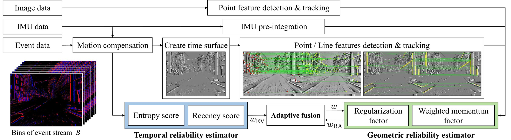
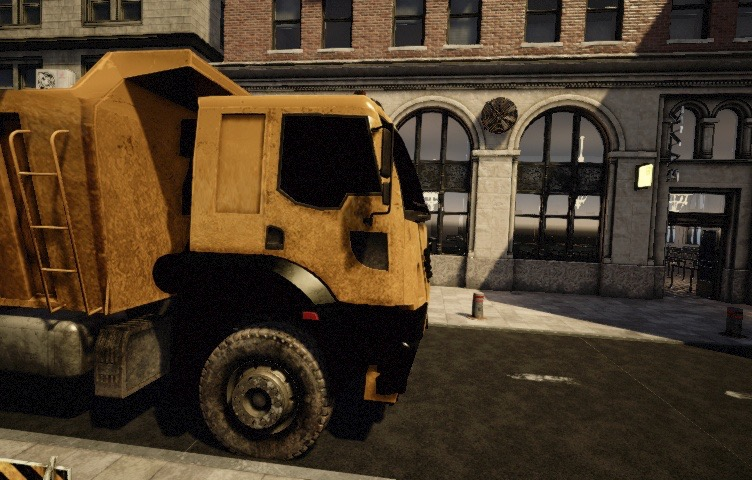
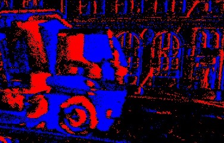
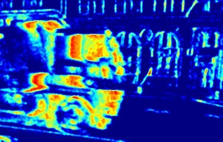
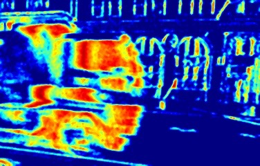
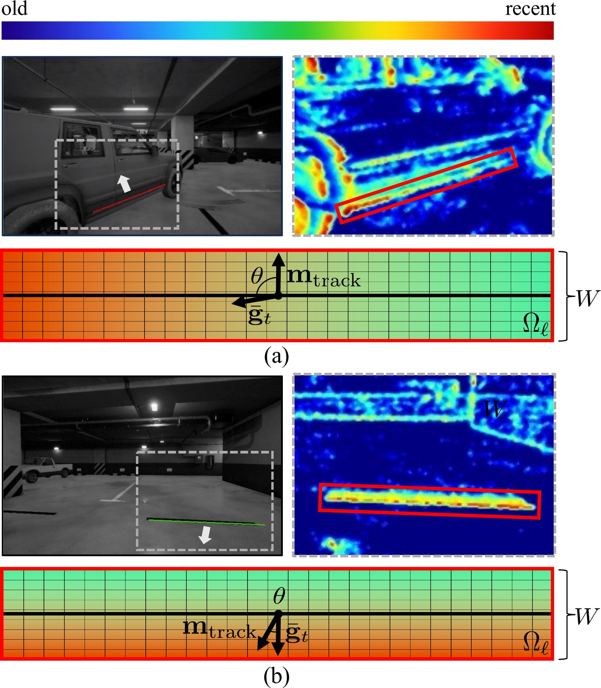
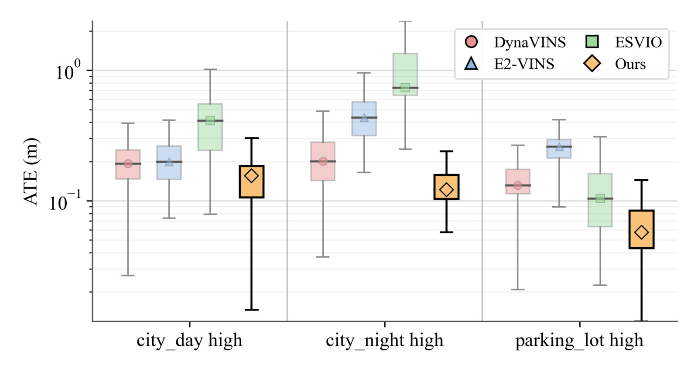
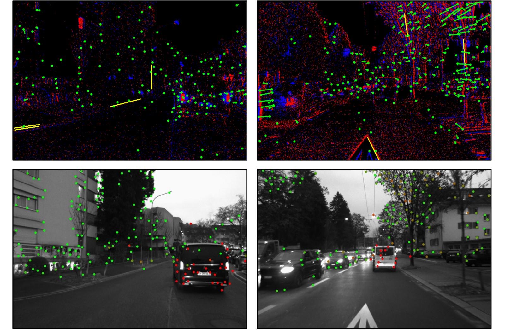

Video
Abstract
Dynamic environments remain a fundamental challenge for visual SLAM, where unreliable observations from moving objects and rapid motion degrade state estimation accuracy. Although event cameras preserve fine-grained spatio-temporal information, most existing event-based SLAM frameworks still assume static scenes and lack approaches to estimate the reliability of features.
To this end, we propose PLED-VINS, a monocular event camera-based visual-inertial SLAM framework that enables robust state estimation in dynamic environments. We propose an entropy-recency score map to characterize the temporal reliability of both point and line features based on event temporal statistics. Concurrently, geometric reliability is estimated via a unified point–line robust bundle adjustment. Building upon these, we design an adaptive weighting strategy that fuses temporal and geometric reliability, including motion-conditioned reliability modeling for line features, to suppress unreliable observations.
Experimental results demonstrate that PLED-VINS improves state estimation on the evaluated dynamic sequences with moving objects.
Method

Entropy-Recency Score Map
After motion compensation, static structures produce a structured timestamp distribution, whereas events from independently moving objects remain unstructured. The entropy–recency score map captures the distribution and recency of events at each pixel, thereby quantifying feature-level temporal reliability.




Top, (a) raw image with an independently moving object and (b) motion-compensated events. Bottom, drag the slider to compare the entropy score with the entropy–recency score. The fused score suppresses static background regions while highlighting the moving object.
Motion-Conditioned Line Reliability
The reliability of line features depends on the interaction between camera motion and line geometry. The motion-conditioned fusion coefficient adaptively shifts the line weight between temporal and geometric reliability depending on motion conditions.

Gradient alignment within the line band region. (a) Motion and gradient are misaligned. (b) Motion aligned with the temporal gradient structure.
Results
VIODE
The number of dynamic objects increases across four levels (none to high). Our method achieved the lowest ATE in all high sequences.

DAVIS 240C
Our method achieved the lowest MPE in both sequences with dynamic objects and real-world sensor noise.
DSEC
Features on moving vehicles were suppressed, while reliable features from the static background were retained.

BibTeX
@inproceedings{lee2026pledvins,
title = {{PLED-VINS}: A Point-Line Event-Based Visual Inertial {SLAM} for Dynamic Environments},
author = {Lee, Seunghun and Nam, Jihun and Seo, Dong-Uk and Myung, Hyun},
booktitle = {IEEE/RSJ International Conference on Intelligent Robots and Systems (IROS)},
year = {2026}
}